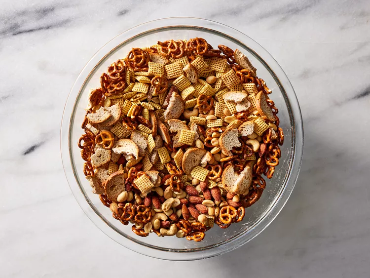

Chex Mix

Best Chex Mix in the damn world
Ingredients
- 3 cups Corn Chex cereal
- 3 cups Rice Chex cereal
- 3 cups Wheat Chex cereal
- 1 cup mixed nuts
- 1 cup bite-sized pretzels
- 1 cup garlic-flavor bite-size bagel chips or regular-size bagel chips, broken into 1-inch pieces
- 6 tablespoons butter or margarine
- 2 tablespoons Worcestershire sauce
- 1 1/2 teaspoons seasoned salt
- 3/4 teaspoon garlic powder
- 1/2 teaspoon onion powder
Steps
- In large microwavable bowl, mix cereals, nuts, pretzels and bagel chips; set aside. In small microwavable bowl, microwave butter uncovered on High about 40 seconds or until melted. Stir in seasonings. Pour over cereal mixture; stir until evenly coated.
- Microwave uncovered on High 5 to 6 minutes, thoroughly stirring every 2 minutes. Spread on paper towels to cool. Store in airtight container.